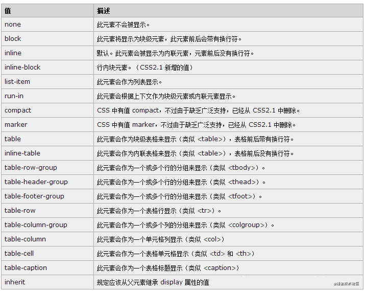
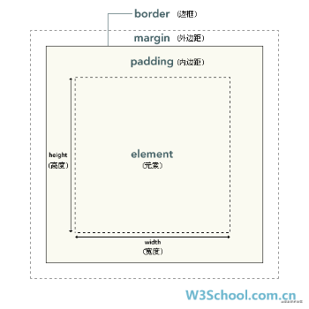
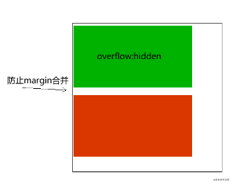
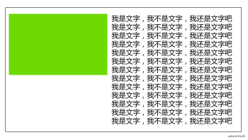

BFC相关
BFC(Block formatting context)直译为”块级格式化上下文”。
在讲BFC之前得先说下display的属性值，只有它符合成为条件才资格触发BFC机制

那些属性值会具有BFC的条件
不是所有的元素模式都能产生BFC，w3c 规范： display 属性为 block, list-item, table 的元素，会产生BFC.
大家有没有发现这个三个都是用来布局最为合理的元素，因为他们就是用来可视化布局。注意其他的，display属性，比如 line 等等，他们创建的是 IFC ，我们下面研究。
这个BFC 有着具体的布局特性:

有宽度和高度，有 外边距margin 有内边距padding 有边框 border。就好比，你有了练习武术的体格了。 有潜力，有资质。
什么情况下可以让元素产生BFC
以上盒子具有BFC条件了，就是说有资质了，但是怎样触发才会产生BFC，从而创造这个封闭的环境呢？要给这些元素添加如下属性就可以触发BFC。
- float属性不为none
- position为absolute或fixed
- display为inline-block, table-cell, table-caption, flex, inline-flex
- overflow不为visible。
BFC元素所具有的特性
BFC布局规则特性：
在BFC中，盒子从顶端开始垂直地一个接一个地排列
盒子垂直方向的距离由margin决定。属于同一个BFC的两个相邻盒子的margin会发生重叠
在BFC中，每一个盒子的左外边缘（margin-left）会触碰到容器的左边缘(border-left)（对于从右到左的格式来说，则触碰到右边缘）。
- BFC的区域不会与浮动盒子产生交集，而是紧贴浮动边缘。
- 计算BFC的高度时，自然也会检测浮动或者定位的盒子高度
它是一个独立的渲染区域，只有Block-level box参与， 它规定了内部的Block-level Box如何布局，并且与这个区域外部毫不相干。
BFC的主要用途
(1) 清除元素内部浮动
只要把父元素设为BFC就可以清理子元素的浮动了，最常见的用法就是在父元素上设置overflow: hidden样式
主要用到
计算BFC的高度时，自然也会检测浮动或者定位的盒子高度。
(2) 解决外边距合并(塌陷)问题
主要用到
盒子垂直方向的距离由margin决定。属于同一个BFC的两个相邻盒子的margin会发生重叠
属于同一个sBFC的两个相邻盒子的margin会发生重叠，那么我们创建不属于同一个BFC，就不会发生margin重叠了。

(3) 制作右侧自适应的盒子问题
主要用到
普通流体元素BFC后，为了和浮动元素不产生任何交集，顺着浮动边缘形成自己的封闭上下文

BFC 总结
BFC就是页面上的一个隔离的独立容器，容器里面的子元素不会影响到外面的元素。反之也如此。包括浮动，和外边距合并等等，因此，有了这个特性，我们布局的时候就不会出现意外情况了。
IFC相关
IFC（inline Formatting Context）叫做“行级格式化上下”相对BFC比较简单且问的也不是很多，这里大该做个了解
布局规则如下：
- 内部的盒子会在水平方向，一个个地放置(默认就是IFC)；
- IFC的高度，由里面最高盒子的高度决定(里面的内容会撑开父盒子）；
- 当一行不够放置的时候会自动切换到下一行；